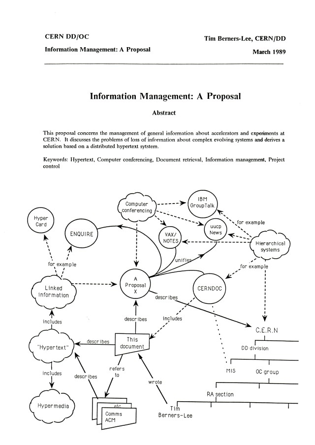

HyperText Markup Language
World Wide Web
1989
매일경제일보, 1988.9.17.
마이크로택 9800X, 1989.
교육용 PC 사업, IBM PC-XT 호환 기종. 1989.
유럽입자물리연구소, CERN

팀 버너스 리의 제안서 첫 페이지, 1989.3.
라인 모드 브라우저로 접속한 최초의 웹사이트
info.cern.ch
Sir Tim Berners-Lee
Sir Tim Berners-Lee
World Wide Web Consortium, 1994
Web Hypertext Application Technology Working Group, 2004
HTML Living Standard, 2011
World Wide Web Foundation, 2009
웹의 시기 구분
World Wide Web Foundation